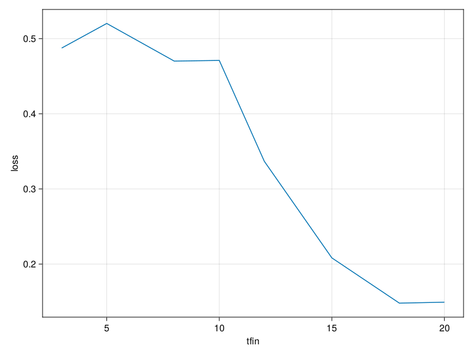
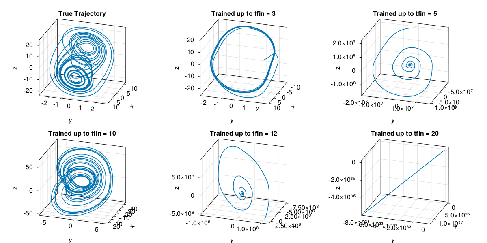
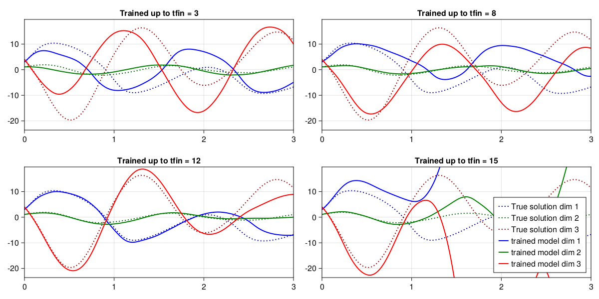
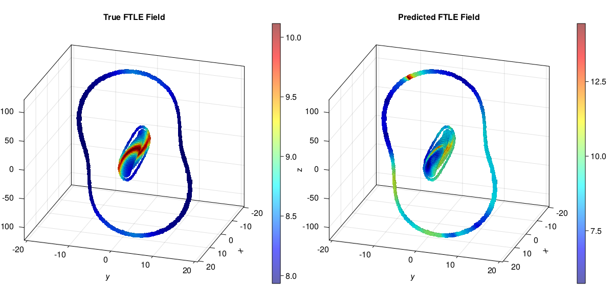
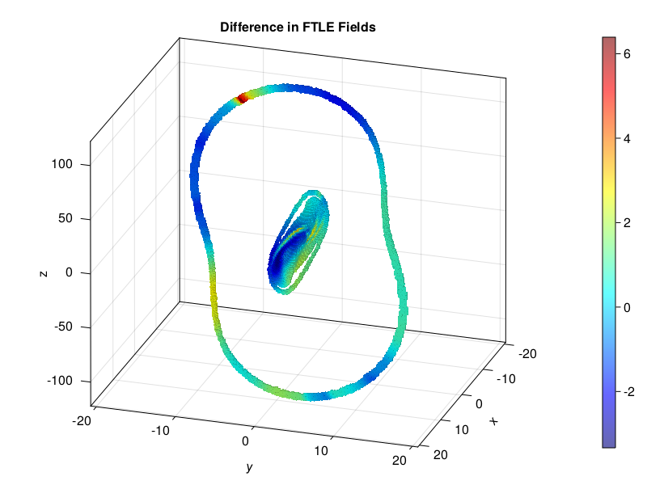
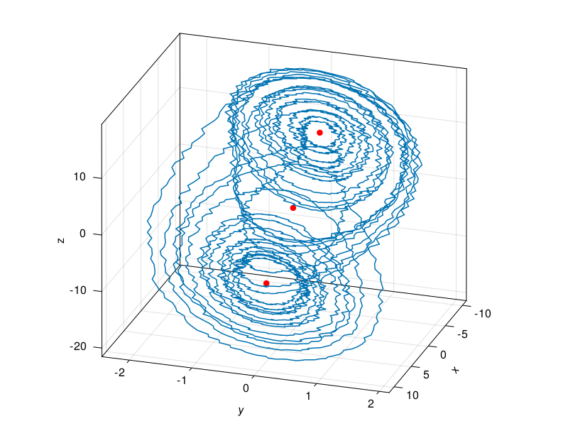
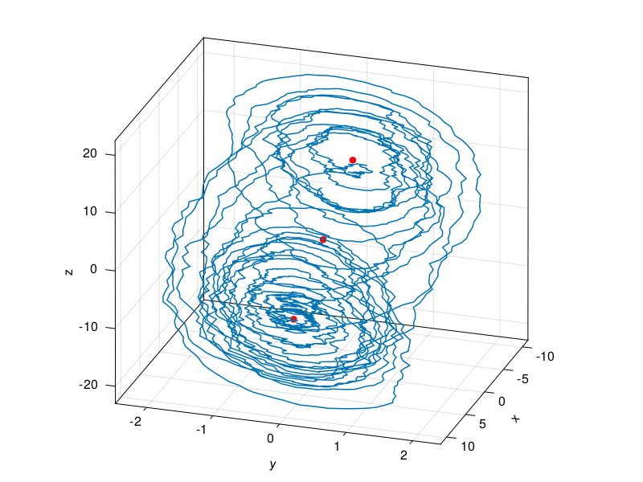
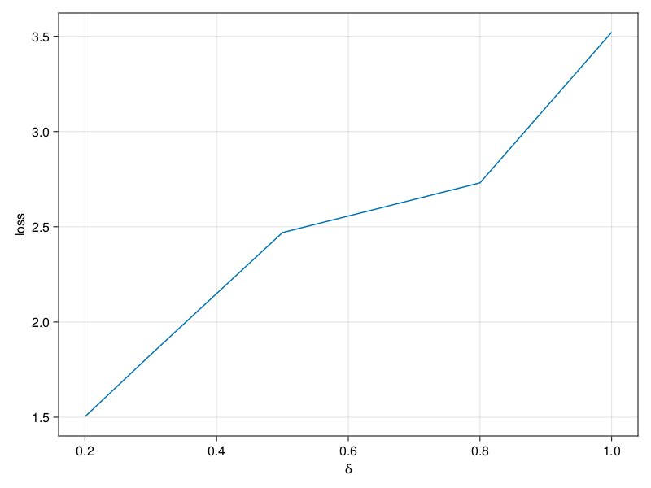
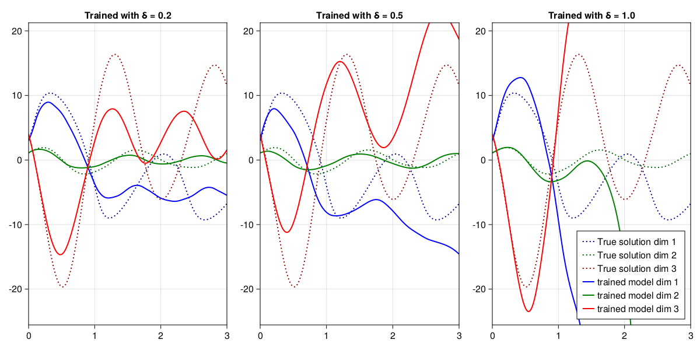

Discussion
Hyperparameter Optimization
The general model used, as described in the model section, is summarized as follows.
A residual neural network with N_hidden_layers and N_weights per layer was trained using N_epochs with the RMSProp [SOURCE] gradient-based optimization method with learning rate η. The loss function from the model section with added regularization hyperparameter θ and exponential weight factor β was used:
\[L(\mathbf{x}, \mathbf{\hat{x}}; \mathbf{p}) = \left( \sum_{i=1}^n \beta^i \cdot \| \mathbf{x}(t_i) - \mathbf{\hat{x}}(t_i; \mathbf{p}) \| ^2 \right) + \frac{\theta}{2} \| \mathbf{p} \| ^2 . \]
The regularization factor was implemented using Flux.jl's built in OptimiserChain and WeightDecay functions.
The hyperparameters were optimized over the following grid in the script file runscript.jl.
weights = [10, 12, 15, 18, 20]
hidden_layers = [3]#[1, 2, 3]
epochs = [120]
tfins = Float32[15]#Float32[5, 8, 10, 12, 15, 18, 20]
βs = Float32[0.95, 0.98, 0.99, 1.]
θs = Float32[1f-2, 1f-3, 1f-4]
ηs = Float32[1f-3]
params = [
(w, l, e, t, β, θ, η) for
w in weights,
l in hidden_layers,
e in epochs,
t in tfins,
β in βs,
θ in θs,
η in ηs
]5×1×1×1×4×3×1 Array{Tuple{Int64, Int64, Int64, Float32, Float32, Float32, Float32}, 7}:
[:, :, 1, 1, 1, 1, 1] =
(10, 3, 120, 15.0, 0.95, 0.01, 0.001)
(12, 3, 120, 15.0, 0.95, 0.01, 0.001)
(15, 3, 120, 15.0, 0.95, 0.01, 0.001)
(18, 3, 120, 15.0, 0.95, 0.01, 0.001)
(20, 3, 120, 15.0, 0.95, 0.01, 0.001)
[:, :, 1, 1, 2, 1, 1] =
(10, 3, 120, 15.0, 0.98, 0.01, 0.001)
(12, 3, 120, 15.0, 0.98, 0.01, 0.001)
(15, 3, 120, 15.0, 0.98, 0.01, 0.001)
(18, 3, 120, 15.0, 0.98, 0.01, 0.001)
(20, 3, 120, 15.0, 0.98, 0.01, 0.001)
[:, :, 1, 1, 3, 1, 1] =
(10, 3, 120, 15.0, 0.99, 0.01, 0.001)
(12, 3, 120, 15.0, 0.99, 0.01, 0.001)
(15, 3, 120, 15.0, 0.99, 0.01, 0.001)
(18, 3, 120, 15.0, 0.99, 0.01, 0.001)
(20, 3, 120, 15.0, 0.99, 0.01, 0.001)
[:, :, 1, 1, 4, 1, 1] =
(10, 3, 120, 15.0, 1.0, 0.01, 0.001)
(12, 3, 120, 15.0, 1.0, 0.01, 0.001)
(15, 3, 120, 15.0, 1.0, 0.01, 0.001)
(18, 3, 120, 15.0, 1.0, 0.01, 0.001)
(20, 3, 120, 15.0, 1.0, 0.01, 0.001)
[:, :, 1, 1, 1, 2, 1] =
(10, 3, 120, 15.0, 0.95, 0.001, 0.001)
(12, 3, 120, 15.0, 0.95, 0.001, 0.001)
(15, 3, 120, 15.0, 0.95, 0.001, 0.001)
(18, 3, 120, 15.0, 0.95, 0.001, 0.001)
(20, 3, 120, 15.0, 0.95, 0.001, 0.001)
[:, :, 1, 1, 2, 2, 1] =
(10, 3, 120, 15.0, 0.98, 0.001, 0.001)
(12, 3, 120, 15.0, 0.98, 0.001, 0.001)
(15, 3, 120, 15.0, 0.98, 0.001, 0.001)
(18, 3, 120, 15.0, 0.98, 0.001, 0.001)
(20, 3, 120, 15.0, 0.98, 0.001, 0.001)
[:, :, 1, 1, 3, 2, 1] =
(10, 3, 120, 15.0, 0.99, 0.001, 0.001)
(12, 3, 120, 15.0, 0.99, 0.001, 0.001)
(15, 3, 120, 15.0, 0.99, 0.001, 0.001)
(18, 3, 120, 15.0, 0.99, 0.001, 0.001)
(20, 3, 120, 15.0, 0.99, 0.001, 0.001)
[:, :, 1, 1, 4, 2, 1] =
(10, 3, 120, 15.0, 1.0, 0.001, 0.001)
(12, 3, 120, 15.0, 1.0, 0.001, 0.001)
(15, 3, 120, 15.0, 1.0, 0.001, 0.001)
(18, 3, 120, 15.0, 1.0, 0.001, 0.001)
(20, 3, 120, 15.0, 1.0, 0.001, 0.001)
[:, :, 1, 1, 1, 3, 1] =
(10, 3, 120, 15.0, 0.95, 0.0001, 0.001)
(12, 3, 120, 15.0, 0.95, 0.0001, 0.001)
(15, 3, 120, 15.0, 0.95, 0.0001, 0.001)
(18, 3, 120, 15.0, 0.95, 0.0001, 0.001)
(20, 3, 120, 15.0, 0.95, 0.0001, 0.001)
[:, :, 1, 1, 2, 3, 1] =
(10, 3, 120, 15.0, 0.98, 0.0001, 0.001)
(12, 3, 120, 15.0, 0.98, 0.0001, 0.001)
(15, 3, 120, 15.0, 0.98, 0.0001, 0.001)
(18, 3, 120, 15.0, 0.98, 0.0001, 0.001)
(20, 3, 120, 15.0, 0.98, 0.0001, 0.001)
[:, :, 1, 1, 3, 3, 1] =
(10, 3, 120, 15.0, 0.99, 0.0001, 0.001)
(12, 3, 120, 15.0, 0.99, 0.0001, 0.001)
(15, 3, 120, 15.0, 0.99, 0.0001, 0.001)
(18, 3, 120, 15.0, 0.99, 0.0001, 0.001)
(20, 3, 120, 15.0, 0.99, 0.0001, 0.001)
[:, :, 1, 1, 4, 3, 1] =
(10, 3, 120, 15.0, 1.0, 0.0001, 0.001)
(12, 3, 120, 15.0, 1.0, 0.0001, 0.001)
(15, 3, 120, 15.0, 1.0, 0.0001, 0.001)
(18, 3, 120, 15.0, 1.0, 0.0001, 0.001)
(20, 3, 120, 15.0, 1.0, 0.0001, 0.001)For each hyperparameter configuration, the model was optimized and the resulting loss was recorded in an array losses. This, along with the optimized neural net parameters p for each hyperparameter configuration, was saved as a BSON file. After the grid search was completed, the optimal hyperparameter set was observed to be N_weights = 15, N_hidden_layers = 3, β = 0.99, θ = 0.0001.
Amount of Data Required
We wish to observe the minimal amount of data required to obtain a satisfying approximation of the qualitative dynamics. For this, the same initial point x0 was used with different integration lengths tfin. Ideally, a hyperparameter optimization would be performed for each of the datasets. Due to hardware and time constraints, the same optimal hyperparameters from the initial search were used for all datasets.
All trained models were evaluated on the same two trajectories starting at the initial points $x_1 = ( -5, 1.2, -4 )^T$ and $x_2 = ( -6, 1.2, -6 )^T$ converging to the double scroll attractor and outer periodic orbit, respectively.
Since the two trajectories lie in different scales, the trained models are evaluated using a relative squared error metric
\[L_{rel} (\mathbf{x}, \mathbf{\hat{x}}; \mathbf{p}) = \frac{1}{\sigma^2 (\mathbf{x})} \sum_{i=1}^n \| \mathbf{x}(t_i) - \mathbf{\hat{x}}(t_i; \mathbf{p}) \| ^2\]
where $\mathbf{m}(\mathbf{x})$ is the empirical mean of $(\,\mathbf{x}(t_i)\,)_{i = 1,\ldots,n}$ and $\sigma^2 (\mathbf{x})$ is the empirical variance
\[\sigma^2 (x) = \sum_{i=1}^n \left\| \mathbf{x}(t_i) - \mathbf{m} (\mathbf{x}) \right\| ^2 .\]
The datasets generated by the following final times were tested in the script file runscript2.jl.
tfins = Float32[3, 5, 8, 10, 12, 15, 18, 20]8-element Vector{Float32}:
3.0
5.0
8.0
10.0
12.0
15.0
18.0
20.0using CairoMakie
using Random
Random.seed!(1234)TaskLocalRNG()# for plotting phase portraits
function chua_axis(; aspect=(1,1.2,1), azimuth=pi/10, kwargs...)
fig = Figure()
ax = Axis3(fig[1,1], aspect=aspect, azimuth=azimuth, kwargs...)
fig, ax
endchua_axis (generic function with 1 method)using BSON
losses = BSON.load( "assets/params/losses_2023-04-02-06-43.bson" )[:losses]Dict{Float32, Float32} with 8 entries:
5.0 => 0.520202
15.0 => 0.20821
20.0 => 0.149294
10.0 => 0.471012
18.0 => 0.147988
12.0 => 0.33676
8.0 => 0.470084
3.0 => 0.487478Due to hardware constraints, a more detailed search of final times was not possible. However, even with a small dataset it was still possible to notice a trend between dataset size and evaluated loss.
fig1 = Figure()
ax1 = Axis(fig1[1,1], xlabel="tfin", ylabel="loss")
ms1 = lines!(ax1, tfins, map(x->losses[x], tfins))
Curiously, it seems the models tranied on the most data became unstable. This can be seen when comparing longer trajectories which are in time closer to the scale of the largest Lyapunov exponent.
We first gather the trained parameters from each dataset.
params = Dict{Float32,Vector{Float32}}(
3 => BSON.load("assets/params/params_2023-04-02-07-05_loss_0.48747793.bson")[:p_trained],
5 => BSON.load("assets/params/params_2023-04-02-08-16_loss_0.520202.bson")[:p_trained],
8 => BSON.load("assets/params/params_2023-04-02-08-56_loss_0.47008443.bson")[:p_trained],
10 => BSON.load("assets/params/params_2023-04-02-09-20_loss_0.471012.bson")[:p_trained],
12 => BSON.load("assets/params/params_2023-04-02-09-36_loss_0.33675984.bson")[:p_trained],
15 => BSON.load("assets/params/params_2023-04-02-09-53_loss_0.20821033.bson")[:p_trained],
18 => BSON.load("assets/params/params_2023-04-02-10-09_loss_0.14798835.bson")[:p_trained],
20 => BSON.load("assets/params/params_2023-04-02-10-18_loss_0.1492943.bson")[:p_trained]
)Dict{Float32, Vector{Float32}} with 8 entries:
5.0 => [0.607717, -0.38385, -0.363519, 0.486372, -0.0684945, 0.284115, 0.732…
15.0 => [-0.475963, 0.398366, -0.0163883, 0.0343725, -0.165915, 0.147566, -0.…
20.0 => [0.497705, -0.261413, -0.429641, -0.619645, -0.0461649, 0.890463, 0.6…
10.0 => [-0.39655, -0.200156, 0.11536, 0.195182, 0.104461, -0.295064, 0.15070…
18.0 => [-0.166653, -0.160973, 0.138394, -0.280427, -0.45777, -0.237651, 0.54…
12.0 => [-0.22705, 0.19442, 0.34643, -0.0482318, 0.735013, 0.565018, -0.03837…
8.0 => [0.131129, -0.0353615, 0.750711, -0.186892, -0.602767, -0.410698, 0.3…
3.0 => [-0.387957, -0.0164001, -0.280232, -0.615422, -0.271049, 0.0346531, -…We can recreate the models using these parameters, and compare the model trajectories to the true trajectory for an unseen initial condition.
using StaticArrays, DifferentialEquations
using Flux, SciMLSensitivity
using Statistics# Chua's circuit
function v(u, p, t)
x, y, z = u
a, b, m0, m1 = p
SA{Float32}[ a*(y-m0*x-m1/3.0*x^3), x-y+z, -b*y ]
end
# parameters
p_ode = SA{Float32}[ 18.0, 33.0, -0.2, 0.01 ]
a, b, m0, m1 = p_ode
v(u) = v(u, p_ode, 0f0)
# equilibrium
x₊ = SA{Float32}[ sqrt(-3*m0/m1), 0, -sqrt(-3*m0/m1) ]
x₋ = -x₊
x1 = SA{Float32}[-5, 1.2, -4]
x2 = SA{Float32}[-6, 1.2, -6]
# integration time
t0, t1 = 0f0, 40f0
tspan = (t0, t1)
dt = 1f-20.01f0# the model which was trained
nn = Chain(
x -> Float32.(x),
Dense(3 => 15, swish),
SkipConnection(Dense(15 => 15, swish), +),
SkipConnection(Dense(15 => 15, swish), +),
SkipConnection(Dense(15 => 15, swish), +),
Dense(15 => 3)
)
p, re_nn = Flux.destructure(nn)
v_neural(u, p, t) = SVector{3,Float32}(re_nn(p)(u))v_neural (generic function with 1 method)For very long trajectories, all models will deviate from the true trajectory, due to the chaotic nature of the system. Interestingly however, the model trained until tfin = 10 was successfully able to capture the pseudoperiodic nature of the attractor.
fig2 = Figure(resolution=(1200,600))
ax21 = Axis3(fig2[1,1], aspect=(1,1.2,1), azimuth=pi/10, title="True Trajectory")
ax22 = Axis3(fig2[1,2], aspect=(1,1.2,1), azimuth=pi/10, title="Trained up to tfin = 3")
ax23 = Axis3(fig2[1,3], aspect=(1,1.2,1), azimuth=pi/10, title="Trained up to tfin = 5")
ax24 = Axis3(fig2[2,1], aspect=(1,1.2,1), azimuth=pi/10, title="Trained up to tfin = 10")
ax25 = Axis3(fig2[2,2], aspect=(1,1.2,1), azimuth=pi/10, title="Trained up to tfin = 12")
ax26 = Axis3(fig2[2,3], aspect=(1,1.2,1), azimuth=pi/10, title="Trained up to tfin = 20")
prob = ODEProblem(v, x1, (t0, t1), p_ode)
sol = solve(prob, RK4(), saveat=dt)
lines!(ax21, sol.u)
prob = ODEProblem(v_neural, x1, (t0, t1), params[3])
sol = solve(prob, RK4(), saveat=dt)
lines!(ax22, sol.u)
prob = ODEProblem(v_neural, x1, (t0, t1), params[5])
sol = solve(prob, RK4(), saveat=dt)
lines!(ax23, sol.u)
prob = ODEProblem(v_neural, x1, (t0, t1), params[10])
sol = solve(prob, RK4(), saveat=dt)
lines!(ax24, sol.u)
prob = ODEProblem(v_neural, x1, (t0, t1), params[12])
sol = solve(prob, RK4(), saveat=dt)
lines!(ax25, sol.u)
prob = ODEProblem(v_neural, x1, (t0, t1), params[20])
sol = solve(prob, RK4(), saveat=dt)
lines!(ax26, sol.u)┌ Warning: dt(3.8146973e-6) <= dtmin(3.8146973e-6) at t=19.734734. Aborting. There is either an error in your model specification or the true solution is unstable.
└ @ SciMLBase ~/.julia/packages/SciMLBase/VdcHg/src/integrator_interface.jl:589
t2 = 3f0
x3 = SA{Float32}[3, 1.1, 4]
fig3 = Figure(resolution=(1200,600))
ax31 = Axis(fig3[1,1], title="Trained up to tfin = 3")
ax32 = Axis(fig3[1,2], title="Trained up to tfin = 8")
ax33 = Axis(fig3[2,1], title="Trained up to tfin = 12")
ax34 = Axis(fig3[2,2], title="Trained up to tfin = 15")
prob = ODEProblem(v, x3, (t0, t2), p_ode)
true_sol = reinterpret(reshape, Float32, solve(prob, RK4(), saveat=dt).u)
for (ax, tfin) in zip([ax31, ax32, ax33, ax34], Float32[3, 8, 12, 15])
lines!(ax, t0:dt:t2, true_sol[1, :], color=:darkblue, linestyle=:dot, linewidth=2, label="True solution dim 1")
lines!(ax, t0:dt:t2, true_sol[2, :], color=:darkgreen, linestyle=:dot, linewidth=2, label="True solution dim 2")
lines!(ax, t0:dt:t2, true_sol[3, :], color=:darkred, linestyle=:dot, linewidth=2, label="True solution dim 3")
prob = ODEProblem(v_neural, x3, (t0, t2), params[tfin])
sol = reinterpret(reshape, Float32, solve(prob, RK4(), saveat=dt).u)
lines!(ax, t0:dt:t2, sol[1, :], color=:blue, linewidth=2, label="trained model dim 1")
lines!(ax, t0:dt:t2, sol[2, :], color=:green, linewidth=2, label="trained model dim 2")
lines!(ax, t0:dt:t2, sol[3, :], color=:red, linewidth=2, label="trained model dim 3")
end
xlims = (t0, t2)
ylims = 1.2 .* extrema(true_sol)
limits!(ax31, xlims, ylims)
limits!(ax32, xlims, ylims)
limits!(ax33, xlims, ylims)
limits!(ax34, xlims, ylims)
axislegend(ax34, position=:rb)┌ Warning: Assignment to `prob` in soft scope is ambiguous because a global variable by the same name exists: `prob` will be treated as a new local. Disambiguate by using `local prob` to suppress this warning or `global prob` to assign to the existing global variable.
└ @ discussion.md:224
┌ Warning: Assignment to `sol` in soft scope is ambiguous because a global variable by the same name exists: `sol` will be treated as a new local. Disambiguate by using `local sol` to suppress this warning or `global sol` to assign to the existing global variable.
└ @ discussion.md:225
It is clear that some models quickly diverge, despite having more data. There are two main reasons for this issue:
- After ca. 90 epochs, all models began "jumping" from the optimal objective value. This problem is caused largely by the optimization algorithm itself. A learning rate which is too large can cause the optimizer to act chaotically, so a more aggressive reduction in learning rate would be beneficial. Furthermore, switching to a local optimizer (e.g. the LBFGS quasi-Newton method) can additionally be used once a global optimizer has reached an approximate solution. Such local optimizers are built in to the
Optimization.jlecosystem. An even simpler improvement would be to store the "best so far" parameters and update them at each iteration step. This could be added in the training loop as follows:
if false # do not actually, run, just a demo implementation
N_epochs = 180
l_best = Inf32
best_params = model.p
for i_e = 1:N_epochs
Flux.train!(model, train, opt_state) do m, t, x
result = m((t,x))
loss(result, x)
end
l_best = min(l_best, l)
global l = mean(valid) do v
loss( model(v), v[2], β )
end
if l <= l_best
global best_params .= model.p
end
if i_e % 30 == 0
η /= 2
Flux.adjust!(opt_state, η)
end
end
end┌ Warning: Assignment to `l_best` in soft scope is ambiguous because a global variable by the same name exists: `l_best` will be treated as a new local. Disambiguate by using `local l_best` to suppress this warning or `global l_best` to assign to the existing global variable.
└ @ discussion.md:264- The model was trained on very short time intervals to avoid divergence early in training. This was necessary since the initial models can be very expansive / unstable in certain directions. As training evolves, however, the intervals no longer need to be quite as small. A simple imperovement to the trainnig process is therefore to run a second training loop (potentially with less epochs) on larger time slices. Note that this requires more training time, which due to hardware constraints was not possible. This can also be implemented quite easily:
if false # do not actually, run, just a demo implementation
N_epochs = 128
data_length = 8
max_length = 64
while data_length <= max_length
train, valid = NODEDataloader(sol, data_length; dt=dt, valid_set=0.2, GPU=false#=true=#)
for i_e in 1:N_epochs
# run training loop as above
end
data_length *= 2
N_epochs /= 2
end
end┌ Warning: Assignment to `data_length` in soft scope is ambiguous because a global variable by the same name exists: `data_length` will be treated as a new local. Disambiguate by using `local data_length` to suppress this warning or `global data_length` to assign to the existing global variable.
└ @ discussion.md:301
┌ Warning: Assignment to `N_epochs` in soft scope is ambiguous because a global variable by the same name exists: `N_epochs` will be treated as a new local. Disambiguate by using `local N_epochs` to suppress this warning or `global N_epochs` to assign to the existing global variable.
└ @ discussion.md:302It should be noted that even the more "well baheved" models still exhibit very large expansion rates, as an analysis of the Lyapounov exponents shows.
using GAIOc, r = (0,0,0), (20,20,120)
Q = GAIO.Box(c, r)
P = BoxPartition(Q)
S = cover(P, :)
nn_10 = re_nn(params[10])Chain(
Main.var"#6#7"(),
Dense(3 => 15, swish), # 60 parameters
SkipConnection(
Dense(15 => 15, swish), # 240 parameters
+,
),
SkipConnection(
Dense(15 => 15, swish), # 240 parameters
+,
),
SkipConnection(
Dense(15 => 15, swish), # 240 parameters
+,
),
Dense(15 => 3), # 48 parameters
) # Total: 10 arrays, 828 parameters, 3.906 KiB.f(x) = rk4_flow_map(v, x, dt, 100)
F = BoxMap(:grid, f, Q)
# 30 subdivision steps to cover the chain recurrent set
C = chain_recurrent_set(F, S, steps=24)21984 - element BoxSet in 256 x 256 x 256 - element BoxPartitionf(x) = rk4_flow_map(v, x, dt, 20)
F = BoxMap(:grid, f, Q)
σ = finite_time_lyapunov_exponents(F, C, T=20*dt)BoxFun in 256 x 256 x 256 - element BoxPartition with 21984 stored weightsf_neural(x) = rk4_flow_map(SVector{3,Float32} ∘ nn_10, x, dt, 20)
F_neural = BoxMap(:grid, f_neural, Q)
σ_neural = finite_time_lyapunov_exponents(F_neural, C, T=20*dt)BoxFun in 256 x 256 x 256 - element BoxPartition with 21984 stored weightsfig4 = Figure(resolution=(1200,600))
g1 = fig4[1,1] = GridLayout()
g2 = fig4[1,2] = GridLayout()
ax1 = Axis3(g1[1,1], aspect=(1,1.2,1), azimuth=pi/10, title="True FTLE Field")
ms1 = plot!(ax1, σ, colormap=(:jet, 0.6))
Colorbar(g1[1,2], ms1)
ax2 = Axis3(g2[1,1], aspect=(1,1.2,1), azimuth=pi/10, title="Predicted FTLE Field")
ms2 = plot!(ax2, σ_neural, colormap=(:jet, 0.6))
Colorbar(g2[1,2], ms2)
σ_diff = σ_neural - σBoxFun in 256 x 256 x 256 - element BoxPartition with 21984 stored weightsfig5 = Figure()
ax = Axis3(fig5[1,1], aspect=(1,1.2,1), azimuth=pi/10, title="Difference in FTLE Fields")
ms = plot!(ax, σ_diff, colormap=(:jet, 0.6))
Colorbar(fig5[1,2], ms)
Training on the outer Attractor
An interesting - though not entirely unexpected - result of training the model on the outer periodic orbit was that the model was unable to capture the qualitative aspects of the inner attractor. In fact, in many cases the model sharply diverged when approaching the origin. In some sense this is a curious result, since the symmetry of the outer attractor might "suggest" that there is a fixed point near the origin. Knowledge of this fixed point could potentially be encoded via the method of "explicit linearity" mentioned in the model section. However, again due to hardware constraints, this hypothesis could not rigorously tested within an appropriate time frame. Nonetheless, the "failure" of the model when trained on the outer attractor leads to an array of interesting questions on how to learn "hidden" dynamics by choosing an appropriate neural network model based on prior knowledge.
Perturbed Data
In the final test, the data was perturbed by adding white noise to the true differential equation. There are two "natural" methods in which this might be done:
- Integrate the true differential equation to obtain training data, then add white noise to the result. In a natural science setting, this can model using an inexact measurement device on a "macroscopic" system. In other words, the system can be measured (though only inaccurately) without disturbing the system state itself. An example of this type of system would be an energy balance model for large atmospheric systems. This can be implemented using DifferentialEquations.jl as follows:
prob = ODEProblem(v, x3, (t0, t1), p_ode)
sol = solve(prob, RK4(), saveat=dt)
δ = 0.5
sol_arr = reinterpret(reshape, Float32, sol.u)
sol_arr .+= δ/4 * rand(Float32, size(sol_arr)) .- δ/83×4001 reinterpret(reshape, Float32, ::Vector{SVector{3, Float32}}) with eltype Float32:
2.9562 3.23769 3.55967 3.95621 … 8.77365 8.86536 8.80165
1.05274 1.10085 1.2074 1.30683 0.685348 0.656657 0.714721
3.9474 3.57651 3.22271 2.83889 -8.00964 -8.14084 -8.48156fig6, ax = chua_axis()
scatter!(ax, [x₊, SA[0f0,0f0,0f0], x₋], color=:red)
lines!(ax, sol.u)
- Add a diffusion term to the differential equation itself. This way, the gathered data is a realization of a stochastic process and may not immediately capture the true nature of the system. Again in a natural science setting, this can model using a measurement device on a "microscopic" system. That is, the system state cannot be measured without itself being perturbed. An example of this type of system would be subatomic model of a chemical reaction. This can also be done easily using DifferentialEquations.jl
_noise = SA{Float32}[δ, δ, δ]
noise(u, p, t) = _noise
prob = SDEProblem(v, noise, x₊, (t0, t1), p_ode)
sol = solve(prob, saveat=dt)retcode: Success
Interpolation: 1st order linear
t: 4001-element Vector{Float32}:
0.0
0.01
0.02
0.03
0.04
0.05
0.06
0.07
0.08
0.09
⋮
39.92
39.93
39.94
39.95
39.96
39.97
39.98
39.99
40.0
u: 4001-element Vector{SVector{3, Float32}}:
[7.745967, 0.0, -7.745967]
[7.8592963, 0.009285571, -7.77814]
[7.8969603, 0.0719294, -7.787726]
[7.9419894, -0.02532945, -7.8880196]
[7.927784, -0.08205428, -7.8671904]
[7.8101835, -0.11860375, -7.8128686]
[7.770132, -0.17388394, -7.8035054]
[7.769382, -0.19486469, -7.7863364]
[7.6619587, -0.13511784, -7.7897344]
[7.6486635, -0.118525915, -7.7839594]
⋮
[-5.988697, -0.3688464, 1.6565824]
[-6.0473404, -0.37871787, 1.8192406]
[-6.1729956, -0.415064, 1.9362547]
[-6.3807034, -0.45462388, 2.053587]
[-6.502673, -0.37900552, 2.1422272]
[-6.5636473, -0.39323455, 2.2710087]
[-6.7165537, -0.42879677, 2.533097]
[-6.8867397, -0.46379882, 2.6802638]
[-7.1001916, -0.4278846, 2.8488505]fig7, ax = chua_axis()
scatter!(ax, [x₊, SA[0f0,0f0,0f0], x₋], color=:red)
lines!(ax, sol.u)
Since the Chua circuit is so heavily motivated from real life considerations, the method for adding noise ought to reflect the real life as well. The addition of an oscilloscope for measuring current in a circuit does perturb the system slightly, though this change is so small that it is negligible to the cicuit's dynamics. Hence it seems reasonable to use the first approach. However, using a stochastic differential equation may be a natural extension to the project.
The model was trained as before with identical hyperparameters for the following magnitudes of the perturbation δ.
δs = Float32[0.2, 0.3, 0.5, 0.8, 1.]5-element Vector{Float32}:
0.2
0.3
0.5
0.8
1.0The resulting losses were recorded. Expectedly, the loss shows a positive correlation with the magnitude of the perturbation.
losses = BSON.load( "assets/params/losses_2023-04-03-14-12.bson" )[:losses]Dict{Float32, Float32} with 5 entries:
0.8 => 2.73056
0.5 => 2.46959
0.2 => 1.50256
1.0 => 3.52155
0.3 => 1.82891fig8 = Figure()
ax1 = Axis(fig8[1,1], xlabel="δ", ylabel="loss")
ms1 = lines!(ax1, δs, map(x->losses[x], δs))
params = Dict{Float32,Vector{Float32}}(
0.2f0 => BSON.load("assets/params/params_2023-04-03-17-02_loss_1.5025642.bson")[:p_trained],
0.3f0 => BSON.load("assets/params/params_2023-04-03-17-02_loss_1.8289114.bson")[:p_trained],
0.5f0 => BSON.load("assets/params/params_2023-04-03-16-57_loss_2.4695873.bson")[:p_trained],
0.8f0 => BSON.load("assets/params/params_2023-04-03-16-52_loss_2.7305609.bson")[:p_trained],
1.0f0 => BSON.load("assets/params/params_2023-04-03-15-46_loss_3.521549.bson")[:p_trained],
)Dict{Float32, Vector{Float32}} with 5 entries:
1.0 => [0.210163, 0.0364637, 0.0641928, -0.360489, 0.597534, -0.359996, 0.149…
0.5 => [0.0206331, 0.203733, 0.167374, 0.0369328, -0.283627, 0.652654, 0.2207…
0.2 => [-0.259808, 0.151862, 0.230064, 0.0496329, -0.0888778, -0.232204, 0.32…
0.3 => [0.935949, 0.116808, -0.609739, 0.352416, -0.0419755, 0.109818, -0.166…
0.8 => [-0.299926, -0.23733, 0.100189, 0.2291, 0.347307, 0.34684, 0.0152306, …fig9 = Figure(resolution=(1200,600))
ax31 = Axis(fig9[1,1], title="Trained with δ = 0.2")
ax32 = Axis(fig9[1,2], title="Trained with δ = 0.5")
ax33 = Axis(fig9[1,3], title="Trained with δ = 1.0")
prob = ODEProblem(v, x3, (t0, t2), p_ode)
true_sol = reinterpret(reshape, Float32, solve(prob, RK4(), saveat=dt).u)
for (ax, tfin) in zip([ax31, ax32, ax33], Float32[0.2, 0.5, 1.0])
lines!(ax, t0:dt:t2, true_sol[1, :], color=:darkblue, linestyle=:dot, linewidth=2, label="True solution dim 1")
lines!(ax, t0:dt:t2, true_sol[2, :], color=:darkgreen, linestyle=:dot, linewidth=2, label="True solution dim 2")
lines!(ax, t0:dt:t2, true_sol[3, :], color=:darkred, linestyle=:dot, linewidth=2, label="True solution dim 3")
prob = ODEProblem(v_neural, x3, (t0, t2), params[tfin])
sol = reinterpret(reshape, Float32, solve(prob, RK4(), saveat=dt).u)
lines!(ax, t0:dt:t2, sol[1, :], color=:blue, linewidth=2, label="trained model dim 1")
lines!(ax, t0:dt:t2, sol[2, :], color=:green, linewidth=2, label="trained model dim 2")
lines!(ax, t0:dt:t2, sol[3, :], color=:red, linewidth=2, label="trained model dim 3")
end
xlims = (t0, t2)
ylims = 1.3 .* extrema(true_sol)
limits!(ax31, xlims, ylims)
limits!(ax32, xlims, ylims)
limits!(ax33, xlims, ylims)
axislegend(ax33, position=:rb)┌ Warning: Assignment to `prob` in soft scope is ambiguous because a global variable by the same name exists: `prob` will be treated as a new local. Disambiguate by using `local prob` to suppress this warning or `global prob` to assign to the existing global variable.
└ @ discussion.md:480
┌ Warning: Assignment to `sol` in soft scope is ambiguous because a global variable by the same name exists: `sol` will be treated as a new local. Disambiguate by using `local sol` to suppress this warning or `global sol` to assign to the existing global variable.
└ @ discussion.md:481
We see that increasing the magnitude of the perturbation causes the model to become more unstable. All models were able to roughly capture the period of the periodic behavior, however higher values of δ quickly diverge after just one hlalf period. Observing the lowest value of δ we see that the model is able to capture the trend but is "conservative" with the amplitude of the oscillations. An interesting connection to the original model is that this phenomenon was also observed when using the standard mean square error loss function in training. This might suggest that decreasing the value of the exponential weight factor \beta may be enough to force the model into larger amplitudes.
There are multiple ways in which one could improve this model:
- Train on multiple perturbed trajectories. Ideally, the trajectories are very similar such that having multiple perturbations can potentially "cancel" each other out. This method may be difficult since the chaotic nature of the system means that it has sensitive dependence on initial conditions. Even very similar initial conditions will eventually diverge. Nonetheless simply using multiple trajectories without worrying about their "similarity" can already massively improve the model.
- Add perturbations to the model itself. This could be done by adding white noise to the model integrator, i.e. construct a stochastic differential equation. Then, define the output of the model as the average over multiple realizations. This way, the magnitude of the perturbation within the model can also be trained. This may also help address the issue mentioned above, and increase the amplitude of oscillations.
Conclusion
The complex dynamics of the Chua circuit have been widely studied since its invention. Despite its chaotic nature, a single trajectory around its "double scroll" attractor was enough to accurately predict the system's dynamics up to the time scale of the Lyapunov exponents. Trajectories for training were chosen along the attractor, as well as approaching an attracting periodic orbit. A neural ordinary differential equation was used to approximate the dyanmics. Multiple structures for the neural ODE were tested during development, and a residual network was deemed to be more accurate. Models were quickly able to discover the trend for trajectories, but the amplitude of oscillations were too small. To resolve this issue, a new loss function was defined, using the exponential weight factor \beta. This significantly improved the accuracy of the model. A hyperparameter search was conducted and the optimal hyperparameters were used to analyze the amount of data required to obtain a satisfying approximation of the dynamics. The author concludes that training up to tfin = 10 - equivalently using 1000 datapoints separated by dt=0.02 - was enough to obtain such a satisfying result. Using perturbed data caused the model to perform less accuratley, though only in the sense that the model was too conservative. This is commonly a sign of underfitting. Hence, improvements to the model were suggested, and are summarized here:
- Reduce the learning rate adaptively and store a running best parameter set,
- train the model using a performant local optimizer such as LBFGS once an approximation of the optimal parameter set is found,
- slowly increase the time intervals used in training after many training iterations,
- use multiple similar trajectories instead of only one trajectory,
- add perturbation to the model directly if it is known that the dataset is perturbed.